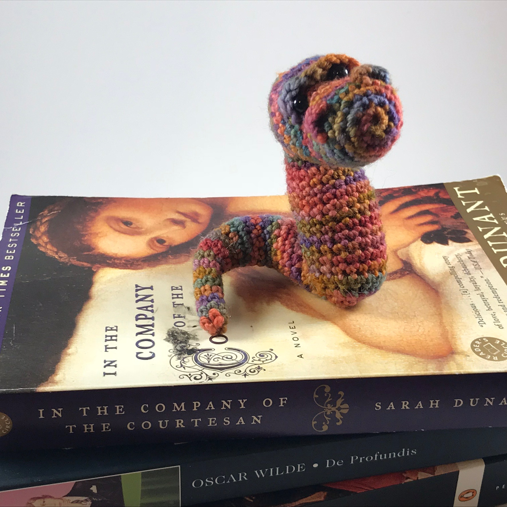

My name is C.J. Hooker and I've been crocheting longer than I'm willing to admit. I can knit, I just happened to be hooked on crochet. Da dum tiss.
This website is dedicated to old hookers, baby hookers and everyone in between. I firmly believe crochet is for everyone and everyone can learn from crocheting. It will teach you patience, relax you and soon you'll begin to hoard yarn. Crochet is so lovable some do it with no hands.
If you want to contact me to tell me how great I am or to ask a question, my email is crotchetyhooker@gmail.com
If you want to complain: bite me.
Cheers.